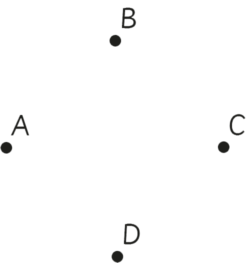

- 11. How many rays can you draw from a single point?
- 12. Give at least three examples that can be considered to represent a ray in our daily life.
Constructing plane figures
A plane figure is a two-dimensional figure which has only length and width. It has no thickness or depth. All plane figures have flat shapes and exist on flat surfaces. There are many different types of plane figures, including squares, rectangles, triangles, circles, and ovals.
Activity 5:
Constructing plane figures using points
1. Study the following points.

2. Use a pencil and a ruler to connect points A and B, C and D, A and D, and D and C.
3. Measure and record the lengths of line segments AB, AD, CD and BC.
4. Name the plane figure formed in task 2.